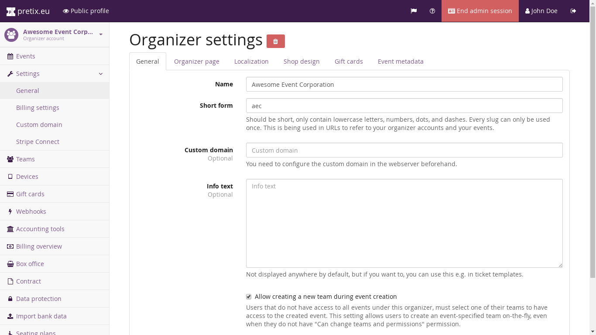

Using a custom domain¶
By default, event shops built with eventyay are accessible at https://<domain>/<organizer>/<event>/, where
<domain> is eventyay.com if you are using our hosted service and <organizer> and <event> are the short
form versions of your organizer account name and event name, respectively.
However, you are also able to use a custom domain for your ticket shops! If you work for “Awesome Party Corporation”
and your website is awesomepartycorp.com, you might want to sell your tickets at tickets.awesomepartycorp.com
and with eventyay, you can do this. On this page, you find out the necessary steps to take.
With the eventyay.com hosted service¶
Go to “Organizers” in the backend and select your organizer account. Then, go to “Settings” and “Custom Domain”.
This page will show you instructions on how to set up your own domain. Basically, it works like this:
Go to the website of the provider you registered your domain name with. Look for the “DNS” settings page in their interface. Unfortunately, we can’t tell you exactly how that is named and how it looks, since it is different for every domain provider.
Use this interface to add a new subdomain record, e.g. tickets of the type CNAME (might also be called “alias”).
The value of the record should be the one shown on the “Custom Domain” page in eventyay’ backend.
Submit your changes and wait a bit, it can regularly take up to three hours for DNS changes to propagate to the caches
of all DNS servers. You can try checking by accessing your new subdomain, http://tickets.awesomepartycorp.com.
If DNS was changed successfully, you should see a SSL certificate error. If you ignore the error and access the page
anyways, you should get a eventyay-themed error page with the headline “Unknown domain”.
Now, tell us about your domain on the “Custom Domain” page to get started.
With a custom pretix installation¶
If you installed pretix on a server yourself, you can also use separate domains for separate organizers. First of all, configure your webserver or reverse proxy to pass requests to the new domain to pretix as well. Then, go to the organizer account in pretix and click the “Edit” button. Enter the new domain in the “Custom Domain” field, then you’re done!
{kind=link}
Note that this field only shows up if you are logged in as a system administrator of your pretix installation.